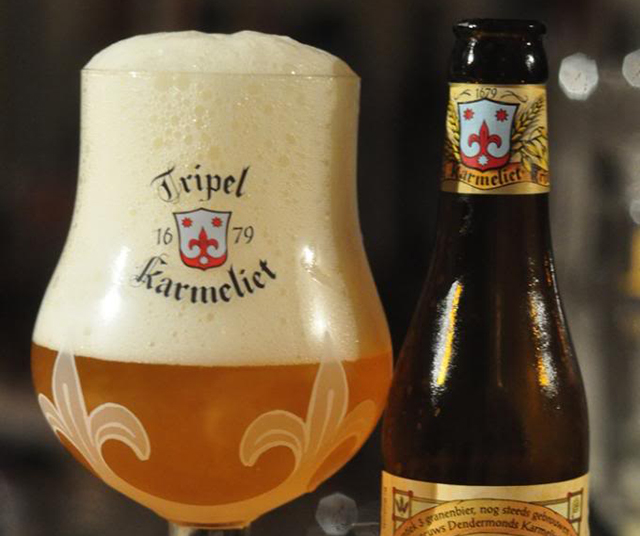
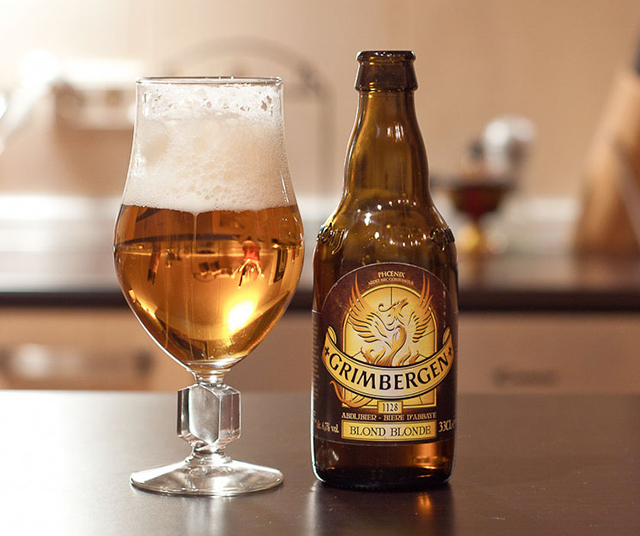

Orval
6.5% vol Blonde
Au goût légèrement amer, elle est très rechercher par les amateurs de bières. Celle-ci est brassé depuis 1931 avec savoir par les moines de l’abbaye de Notre-Dame d’Orval.
Leffe
6.6% vol Blonde
Leffe Blonde est une authentique bière blonde d’Abbaye à la douce amertume qui se savoure à tout moment de la journée. Le goût est plein, doux et fruité (avec une touche d’orange amère), à l’arrière-goût puissant et surprenant.
Kasteel Rouge
8% vol Fruitée
La Kasteel Rouge est un mélange unique de Kasteel Donker et de liqueur de cerises. Une bière pour les amateurs des arômes doux de cerises.
Triple Karmeliet
8.4% volBlonde
La triple a des touches de vanille mélangées avec un arôme citronné dans son odeur. On décèle un goût de froment, d'avoine mais aussi des touches épicées et citronnées.
Grimbergen
6.7% vol Blonde
Légèrement fruitée, la Grimbergen Blonde vous offre un bel équilibre entre douceur et amertume. Sa saveur ample et ronde fait d'elle une bière très appréciée.